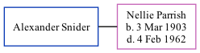

Alexander Snider
[ Home ] | [ Calendar ] | [ Surnames Index ] | [ Family History ]Alexander Snider and was married to Nellie May Parrish.
Media
1940 US Census Transcription - USC-1940-1456124391
Family Tree
Generated by ged2site. Last updated on Nov 13, 2024